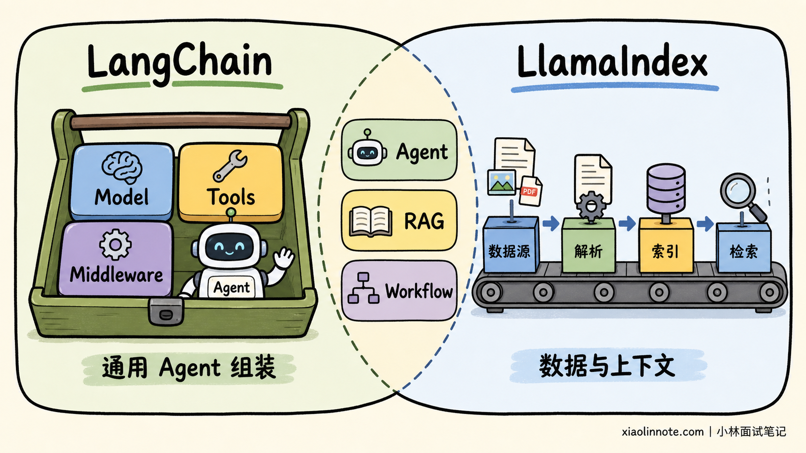
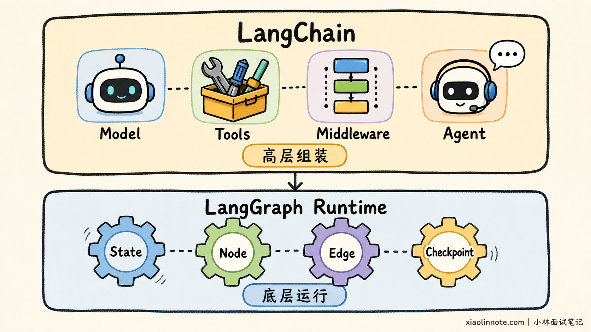
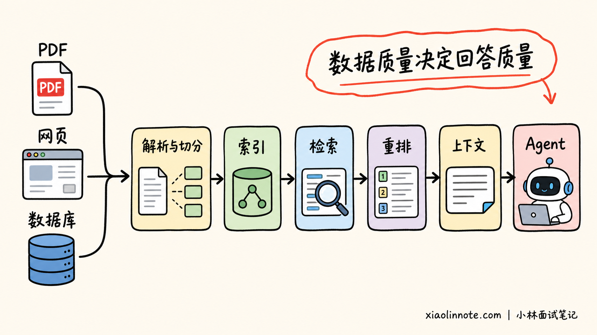
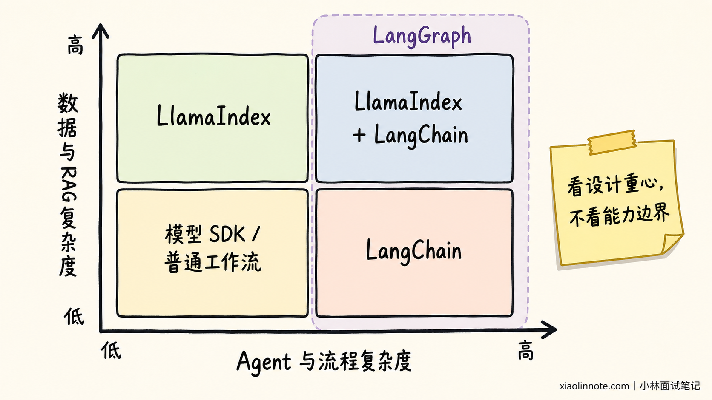
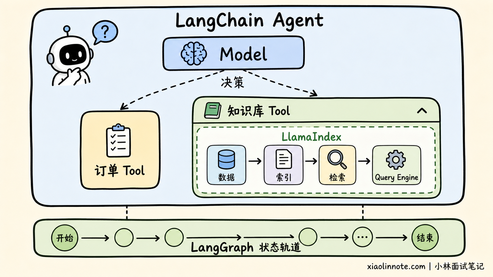

7. LangChain 和 LlamaIndex 有什么区别？
👔面试官：LangChain 和 LlamaIndex 的核心区别是什么？
🙋♂️我：LangChain 用来写 Chain，LlamaIndex 用来做 RAG。
👔面试官：这是过时的二分。现在两者都能做 Agent、Tools、RAG 和 Workflow，应该怎么比较？
🙋♂️我：既然功能差不多，那就选热度更高的。
👔面试官：功能有交集，不代表设计重心相同。项目最难的是工具集成，还是数据解析和检索，才是选型关键。
🙋♂️我：那项目选了 LangChain，就不能再使用 LlamaIndex，否则技术栈会冲突。
👔面试官：框架不是只能二选一。LlamaIndex 的检索能力可以包装成 Tool，再交给 LangChain Agent 或 LangGraph 调度，关键是边界是否清楚。
选型要看业务的主要风险，再判断哪套抽象更合适。
💡 简要回答
LangChain 和 LlamaIndex 现在都能构建 Agent、调用工具和实现 RAG，但它们的默认入口与优势重心不同。
LangChain 更偏通用 Agent 组装。它统一模型、消息、工具、结构化输出和中间件等接口，适合快速连接不同模型供应商、业务 API 和外部工具。当前 LangChain Agent 底层运行在 LangGraph 之上，需要复杂状态、暂停恢复和人工审批时，可以进一步使用 LangGraph 编排。
LlamaIndex 更偏数据与上下文增强。它在数据接入、文档解析、切分、索引、检索、重排和 Query Engine 等环节积累更深，适合企业知识库、复杂文档问答和数据密集型 Agent。它也提供 Agent 和 Workflow，因此不能简单说它只能做 RAG。
选型时应看项目的主要难点：如果难点是模型与工具集成，优先评估 LangChain；如果难点是私有数据处理和检索质量，优先评估 LlamaIndex；如果两边都复杂，可以让 LlamaIndex 负责数据层，把检索能力封装成 Tool，再由 LangChain Agent 或 LangGraph 调度。
📝 详细解析
为什么容易混淆？
两个框架都支持模型调用、Tools、RAG、Agent 和 Workflow，所以按照功能清单比较，很容易得出「它们差不多」的结论。
选型时应该比较设计重心：LangChain 更关心如何统一模型与工具，并快速组装通用 Agent；LlamaIndex 更关心如何把私有数据加工成高质量上下文，再交给模型或 Agent 使用。

核心区别是什么？
| 维度 | LangChain | LlamaIndex |
|---|---|---|
| 设计重心 | 通用 Agent 组装和工具集成 | 数据接入与上下文增强 |
| 主要优势 | 模型、Tools、中间件和第三方集成 | 文档处理、索引、检索和重排 |
| 常见场景 | 工具型 Agent、SQL Agent、业务助手 | 企业知识库、文档 Agent、复杂 RAG |
| 复杂流程 | 通过 LangGraph 管理状态、恢复和人工介入 | 使用 Workflows，或与 LangGraph 组合 |
这张表比较的是优势重心，不是能力边界。LangChain 也有完整的 RAG 组件，LlamaIndex 也能创建 Agent；区别在于哪一套抽象更贴近项目的主要问题。
LangChain 强在哪里？
如果项目需要接入多个模型、搜索、数据库、浏览器、MCP Server 和公司内部 API，最大的工程成本往往是不同接口之间的适配。
LangChain 通过相对统一的 Model、Message、Tool 和 Structured Output 接口屏蔽差异，再用 create_agent 组装模型与工具。Middleware 可以统一加入权限、重试、摘要、动态模型选择和人工审批。
因此，项目如果要快速构建工具型 Agent，同时连接多个模型与外部服务，LangChain 会更顺手。这里的主要难点是让模型选对工具、填对参数，并把权限、重试和审批统一接入调用过程。
等流程复杂到需要精细控制分支、并行和恢复时，团队还可以继续下沉到 LangGraph，不必推翻已经定义好的模型与工具。
LangGraph 是 LangChain Agent 的底层运行时。简单的模型与工具循环使用 create_agent 即可；出现复杂分支、并行、暂停恢复和人工审批时，可以显式编写状态图。

LlamaIndex 强在哪里？
真实 RAG 项目的困难通常不止是把文档放进向量数据库。数据刚进来时，就要处理 PDF 表格、跨页内容、切分方式和元数据；同一制度存在多个版本时，还要判断哪一份仍然有效。
到了查询阶段，系统又要决定走向量检索、关键词检索还是结构化数据库。多路结果回来后，还得过滤、重排并处理冲突。也就是说，难点沿着「数据进入 -> 建立索引 -> 发起检索 -> 组织上下文」一路传递，而不是某一个向量库能单独解决。
LlamaIndex 将数据处理链路拆得更细，可以概括为：
数据接入 -> 解析与切分 -> 索引 -> 检索与重排 -> Query Engine -> AgentLlamaIndex 把「如何得到高质量上下文」作为核心工程问题。企业文档、多数据源路由和复杂检索是它更自然的应用入口。

LlamaIndex 也提供 Agent 和事件驱动 Workflow，可以让模型调用普通工具或数据查询能力。因此，准确的说法是「LlamaIndex 以数据为优势重心」，而不是「LlamaIndex 只能做 RAG」。
应该如何选型？
可以直接问：这个项目最怕哪件事做不好？
| 项目主要风险 | 优先评估 | 原因 |
|---|---|---|
| 模型和业务工具太多，集成复杂 | LangChain | 通用组件和工具接口更自然 |
| 文档解析、切分和检索质量差 | LlamaIndex | 数据与上下文链路抽象更细 |
| 流程需要暂停恢复和人工审批 | LangGraph，可搭配 LangChain | 状态与执行控制是核心能力 |
| 同时需要复杂检索和复杂流程 | LlamaIndex + LangChain/LangGraph | 数据层与编排层分别选择合适组件 |

如果只是简单知识库或单工具 Agent，没有必要为了架构完整同时引入两套框架。组合会增加依赖、追踪和调试成本，只有当两边确实解决独立难题时才值得。
两者如何组合？
最常见的组合边界是 Tool。
LlamaIndex 负责加载数据、构建索引和实现 Query Engine；对外暴露一个「查询企业知识库」的函数，再包装成 LangChain Tool。LangChain Agent 判断什么时候调用，外层如果还有审批、重试和恢复，则交给 LangGraph。
# LlamaIndex Query Engine 被包装成 LangChain 可以调用的 Tool
@tool
def search_company_knowledge(question: str) -> str:
"""查询企业知识库。"""
return str(query_engine.query(question))
# LangChain Agent 负责判断何时查询知识库，何时调用订单工具
agent = create_agent(
model=chat_model,
tools=[search_company_knowledge, lookup_order],
)这段代码表达的重点是职责边界：LlamaIndex 管理数据与检索，LangChain 管理模型和工具选择。生产环境还需要补充租户权限、引用来源、超时和可观测性。

常见误区
最容易出现的误区，是被框架名字或早期教程限制住。LangChain 并不只会把 Prompt 串成 Chain，当前主线已经转向 Agent，固定流程则继续由 Runnable 和 LCEL 承担。
LlamaIndex 能连接向量库，也提供 Agent 和 Workflow。它最有辨识度的部分，仍然是对数据处理、索引、检索与上下文组织的抽象。
既然两边能力有重叠，也就不能简单推导出「必须二选一」或「最好全部引入」。项目可以通过 Tool 或服务接口组合两套框架，可只有数据层和 Agent 编排层确实各自存在独立难题时，这种组合才有收益。否则，多一套依赖和追踪链路只会增加调试成本。
🎯 面试总结
不要再使用「LangChain 做 Chain，LlamaIndex 做 RAG」的过时标签。两者都能做 Agent、工具调用和 RAG，区别在于设计重心。
LangChain 更偏通用 Agent 组装和广泛工具集成，复杂执行流程可以下沉到 LangGraph；LlamaIndex 更偏数据接入、解析、索引、检索和上下文增强，适合企业知识库与复杂 RAG。
选型要落到业务：工具与模型集成是主要难点，优先考虑 LangChain；数据处理和检索质量是主要难点，优先考虑 LlamaIndex；两边都复杂时，让 LlamaIndex 管数据层，让 LangChain 或 LangGraph 管 Agent 和运行层。
📚 参考资料
- LangChain 官方概览
- LangChain 官方文档：Agents
- LangChain 官方文档：Retrieval
- LangGraph 官方概览
- LlamaIndex Framework 官方概览
- LlamaIndex 官方文档：High-Level Concepts
- LlamaIndex 官方文档：Building an Agent
- LlamaIndex 官方文档：Workflows
对了，AI Agent的面试题会在「公众号@小林面试笔记题」持续更新，林友们赶紧关注起来，别错过最新干货哦！